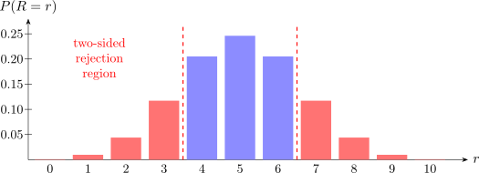

1.7 A First Non-Parametric Test
Some non-parametric statistics have approximately continuous null distributions, the normal among them; others are frankly discrete, and the following is one.
Example 1.7. Survival times are recorded for ten patients. Test \[H_0 : \theta = 200 \qquad \text {against}\qquad H_1 : \theta \neq 200\] at the \(5\%\) level, where \(\theta \) is the population median. Suppose three of the ten observations exceed \(200\).
The statistic. Count the observations above \(200\), recording each as a “\(+\)”. By the definition of the median, under \(H_0\) each observation is above \(200\) with probability \(\tfrac 12\), independently. So the number \(R\) of “\(+\)” signs satisfies \[R \sim B\!\left (10, \tfrac 12\right ), \qquad P(R = r) = \binom {10}{r}\left (\tfrac 12\right )^{10}.\]
The null distribution.
| \(r\) | 0 | 1 | 2 | 3 | 4 | 5 | 6 | 7 | 8 | 9 | 10 |
| \(P(R=r)\) | \(0.0010\) | \(0.0098\) | \(0.0439\) | \(0.1172\) | \(0.2051\) | \(0.2461\) | \(0.2051\) | \(0.1172\) | \(0.0439\) | \(0.0098\) | \(0.0010\) |
The distribution is symmetric about \(r = 5\), as it must be when \(P = \tfrac 12\).
The test. With \(R = 3\) observed, the evidence against \(H_0\) in the lower tail is \[P(R \leq 3) = \sum ^{3}_{r=0}\binom {10}{r}\left (\tfrac 12\right )^{10} = \dfrac {1+10+45+120}{1024} = \dfrac {176}{1024} = 0.1719 .\] The alternative is two-sided, and by symmetry \(P(R \geq 7) = P(R \leq 3)\), so \[P\text {-value} = 2(0.1719) = 0.3438 .\]
Decision. Since \(0.3438 > 0.05\) we do not reject \(H_0\). There is no evidence at the \(5\%\) level that the median differs from \(200\).

Note 1.8. Three out of ten looks like a clear imbalance and is not. With only ten observations the sign test cannot resolve anything but a gross departure: even \(R = 1\) gives a two-sided \(P\)-value of \(2(0.0108) = 0.0215\), and \(R = 2\) gives \(0.1094\). The test is honest about how little ten signs can tell us — which is the point of computing the null distribution rather than trusting the impression.
Questions on this section
Stuck on something here? Ask below and it stays attached to this topic.